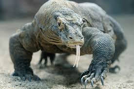

home
King Cobra
Myself
The Komodo Dragon
Komodo Dragons are venomous reptiles that live in southeastern indonesia. The male species can grow up to 10 feet in length and for the women species up to 8 feet. When Komodo dragons hunt they rely on there camouflauge and patience to strike there prey.
They jump on there targets dig the claws into there skin and bite them then the posion will kill the target. There are many different types of prey the komodo dragon but to name a few.
- Small birds
- other kamodo dragons
- deers to water buffolos
there are 4 phases to the komodo dragon life cycle
- egg telur:
when its in the eggs
- hatchling tetasan:
when the komodo dragon hatch from the eggs
- juvenile remaja:
when the komodo dragon lives on his or her own to start hunting
- adult dewasa:
when the komodo dragon is a adult and can start mating
Fun facts
- Komodo dragons were originally from austrila(to no surprise)
- Their skin has thousands of tiny bones inside so there skin acts like armor
- they are incredibly agile
- they can eat 80% of their weight
the komodo dragon can live up to around 30 years
source

| hatchling: eat incects
|
| Youngs: eat small lizards and snakes |
| juvenile: eat rodents and monkeies |
| adults: eat other komodo dragons and deer |
- Komodo dragon competitors
-
dogs
-
humans